任務資訊
抽選詳細
交換詳細
活動概要
活動遊玩方法
魔法襪子交換方法
實用攻略方法
活動限定報酬
活動交換道具
聖誕節PickUp
新登場Servant
PickUp Servant
期間限定概念禮裝
開膛手傑克
童謠
※以下皆為台灣時間(UTC+8)
- 任務資訊
禮裝發動的魔法襪子追加掉落會比原本的少1~2個
有上限值？(待確認)
| Story Quest | 序幕 黒いサンタクロース | |||||||
|---|---|---|---|---|---|---|---|---|
| 消耗AP | 推薦Lv. | 初次報酬 | QP | Exp | 絆 | 職階傾向 | 開始時間 | |
| 5 | 10 | 雷光のトナカイ君 | 1400 | 275 | 115 | 12/16 1:00 | ||
| Wave 1 | ||||||||
| 掉落物 | 迷你緞帶x1 | |||||||
| Story Quest | 第一夜 ダレイオス君 | |||||||
|---|---|---|---|---|---|---|---|---|
| 消耗AP | 推薦Lv. | 初次報酬 | QP | Exp | 絆 | 職階傾向 | 開始時間 | |
| 5 | 10 | 黄金の果実 | 1400 | 275 | 115 | 12/16 1:00 | ||
| Wave 1 | ||||||||
| Wave 2 | ||||||||
| Wave 3 | ||||||||
| 掉落物 | 迷你緞帶x1,銀色鈴鐺x2,魔法襪子x25,魔法襪子x30 | |||||||
| Story Quest | 第二夜 その名はマリーちゃん | |||||||
|---|---|---|---|---|---|---|---|---|
| 消耗AP | 推薦Lv. | 初次報酬 | QP | Exp | 絆 | 職階傾向 | 開始時間 | |
| 5 | 15 | 黄金の果実 | 1900 | 550 | 165 | 12/17 4:00 | ||
| Wave 1 | ||||||||
| Wave 2 | ||||||||
| Wave 3 | ||||||||
| 掉落物 | 迷你緞帶x1,銀色鈴鐺x2,金色星星x2,魔法襪子x40 | |||||||
| Story Quest | 第三夜 ハートブレイク☆ケーカちゃん | |||||||
|---|---|---|---|---|---|---|---|---|
| 消耗AP | 推薦Lv. | 初次報酬 | QP | Exp | 絆 | 職階傾向 | 開始時間 | |
| 5 | 20 | 黄金の果実 | 2400 | 955 | 215 | 12/18 4:00 | ||
| Wave 1 | ||||||||
| Wave 2 | ||||||||
| Wave 3 | ||||||||
| 掉落物 | 迷你緞帶x1,銀色鈴鐺x2,銀色鈴鐺x6,魔法襪子x25,魔法襪子x30 | |||||||
| Story Quest | 第四夜 PN.孤児院の足長おじさん | |||||||
|---|---|---|---|---|---|---|---|---|
| 消耗AP | 推薦Lv. | 初次報酬 | QP | Exp | 絆 | 職階傾向 | 開始時間 | |
| 5 | 22 | 黄金の果実 | 2600 | 1120 | 235 | 12/19 4:00 | ||
| Wave 1 | ||||||||
| Wave 2 | ||||||||
| Wave 3 | ||||||||
| 掉落物 | ||||||||
| Story Quest | 第五夜 ギルガメッシュ君 | |||||||
|---|---|---|---|---|---|---|---|---|
| 消耗AP | 推薦Lv. | 初次報酬 | QP | Exp | 絆 | 職階傾向 | 開始時間 | |
| 5 | 24 | 黄金の果実 | 2800 | 1300 | 255 | 12/20 4:00 | ||
| Wave 1 | ||||||||
| Wave 2 | ||||||||
| Wave 3 | ||||||||
| 掉落物 | ||||||||
| Story Quest | 第六夜 ニセサンタ・カエサル君 | |||||||
|---|---|---|---|---|---|---|---|---|
| 消耗AP | 推薦Lv. | 初次報酬 | QP | Exp | 絆 | 職階傾向 | 開始時間 | |
| 5 | 28 | 黄金の果実 | 3200 | 1610 | 295 | 12/21 4:00 | ||
| Wave 1 | ||||||||
| Wave 2 | ||||||||
| Wave 3 | ||||||||
| 掉落物 | ||||||||
| Story Quest | 第七夜 突撃、となりのオルタちゃん | |||||||
|---|---|---|---|---|---|---|---|---|
| 消耗AP | 推薦Lv. | 初次報酬 | QP | Exp | 絆 | 職階傾向 | 開始時間 | |
| 5 | 30 | 特別引換券 | 3400 | 2190 | 315 | 12/22 4:00 | ||
| Wave 1 | ||||||||
| Wave 2 | ||||||||
| Wave 3 | ||||||||
| 掉落物 | ||||||||
| Free Quest | くつした集め 初級 夢見るクリスマス | |||||||
|---|---|---|---|---|---|---|---|---|
| 消耗AP | 推薦Lv. | 初次報酬 | QP | Exp | 絆 | 職階傾向 | 開始時間 | |
| 10 | 20 | 魔法襪子x20 | 2400 | 955 | 215 | 12/16 1:00 | ||
| Wave 1 | ||||||||
| Wave 2 | ||||||||
| Wave 3 | ||||||||
| 掉落物 | 迷你緞帶x1,迷你緞帶x3,迷你緞帶x6,銀色鈴鐺x2,魔法襪子x2,ホーリーナイト・サイン,世界樹の種,隕蹄鉄,八連双晶 | |||||||
| Free Quest | くつした集め 中級 微笑むクリスマス | |||||||
|---|---|---|---|---|---|---|---|---|
| 消耗AP | 推薦Lv. | 初次報酬 | QP | Exp | 絆 | 職階傾向 | 開始時間 | |
| 20 | 30 | 魔法襪子x20 | 3400 | 2190 | 315 | 12/16 1:00 | ||
| Wave 1 | ||||||||
| Wave 2 | ||||||||
| Wave 3 | ||||||||
| 掉落物 | 迷你緞帶x1,銀色鈴鐺x2,銀色鈴鐺x6,金色星星x2,魔法襪子x3,ホーリーナイト・サイン,世界樹の種,隕蹄鉄,八連双晶,鳳凰の羽根 | |||||||
| Free Quest | くつした集め 上級 わんぱくクリスマス | |||||||
|---|---|---|---|---|---|---|---|---|
| 消耗AP | 推薦Lv. | 初次報酬 | QP | Exp | 絆 | 職階傾向 | 開始時間 | |
| 30 | 40 | 魔法襪子x20 | 4400 | 5690 | 415 | 12/16 1:00 | ||
| Wave 1 | ||||||||
| Wave 2 | ||||||||
| Wave 3 | ||||||||
| 掉落物 | 迷你緞帶x1,迷你緞帶x6,銀色鈴鐺x2,銀色鈴鐺x6,金色星星x2,魔法襪子x4,魔法襪子x5,ホーリーナイト・サイン,世界樹の種,隕蹄鉄,八連双晶,鳳凰の羽根 | |||||||
| Free Quest | くつした集め 超級 ぎりぎりクリスマス | |||||||
|---|---|---|---|---|---|---|---|---|
| 消耗AP | 推薦Lv. | 初次報酬 | QP | Exp | 絆 | 職階傾向 | 開始時間 | |
| 40 | 50 | 魔法襪子x20 | 5400 | 10190 | 515 | 12/16 1:00 | ||
| Wave 1 | ||||||||
| Wave 2 | ||||||||
| Wave 3 | ||||||||
| 掉落物 | 銀色鈴鐺x2,金色星星x2,金色星星x4,金色星星x6,魔法襪子x6,魔法襪子x7,ホーリーナイト・サイン,八連双晶,鳳凰の羽根 | |||||||
| Free Quest | くつした集め 聖夜級 大人でもクリスマス | |||||||
|---|---|---|---|---|---|---|---|---|
| 消耗AP | 推薦Lv. | 初次報酬 | QP | Exp | 絆 | 職階傾向 | 開始時間 | |
| 50 | 80 | 伝承結晶 | 8400 | 29690 | 815 | 12/16 1:00 | ||
| Wave 1 | ||||||||
| Wave 2 | ||||||||
| Wave 3 | ||||||||
| 掉落物 | 通過第七夜後開放 | |||||||
- 抽選詳細
各禮物陣容皆有500個獎項，2個魔術襪子抽1次，前5個陣容抽到大獎道具後可選擇重置換成下個陣容，第6個以後必須把全部獎項抽完才能重置。
| 第1~4個禮物陣容 | 第5個禮物陣容 | 第6個以後禮物陣容 | |||||||||
|---|---|---|---|---|---|---|---|---|---|---|---|
| 景品名 | 數量 | 機率 | 景品名 | 數量 | 機率 | 景品名 | 數量 | 機率 | |||
| 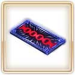 | 特別引換券 | 1 | 0.2% | 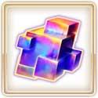 | 伝承結晶 | 1 | 0.2% | 赤銅の果実 | 4 | 0.8% | |
| 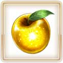 | 黄金の果実 | 2 | 0.4% | 黄金の果実 | 2 | 0.4% | 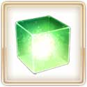 | マナプリズム | 26 | 5.2% | |
| 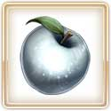 | 白銀の果実 | 3 | 0.6% | 白銀の果実 | 3 | 0.6% | 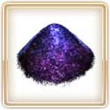 | 虚影の塵 | 5 | 1% | |
| 赤銅の果実 | 4 | 0.8% | 赤銅の果実 | 4 | 0.8% | 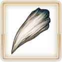 | 竜の牙 | 5 | 1% | ||
| マナプリズム | 20 | 4% | マナプリズム | 20 | 4% | 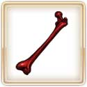 | 凶骨 | 5 | 1% | ||
| 虚影の塵 | 5 | 1% | 虚影の塵 | 5 | 1% | 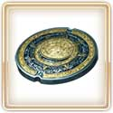 | 英雄の証 | 5 | 1% | ||
| 竜の牙 | 5 | 1% | 竜の牙 | 5 | 1% | 剣の秘石 | 1 | 0.2% | |||
| 凶骨 | 5 | 1% | 凶骨 | 5 | 1% | 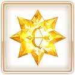 | 弓の秘石 | 1 | 0.2% | ||
| 英雄の証 | 5 | 1% | 英雄の証 | 5 | 1% |  |
槍の秘石 | 1 | 0.2% | ||
| 剣の秘石 | 1 | 0.2% | 剣の秘石 | 1 | 0.2% | 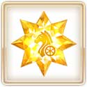 | 騎の秘石 | 1 | 0.2% | ||
| 弓の秘石 | 1 | 0.2% | 弓の秘石 | 1 | 0.2% | 術の秘石 | 1 | 0.2% | |||
|
槍の秘石 | 1 | 0.2% | |
槍の秘石 | 1 | 0.2% | 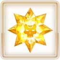 | 殺の秘石 | 1 | 0.2% |
| 騎の秘石 | 1 | 0.2% | 騎の秘石 | 1 | 0.2% | 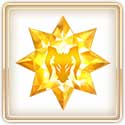 | 狂の秘石 | 1 | 0.2% | ||
| 術の秘石 | 1 | 0.2% | 術の秘石 | 1 | 0.2% | 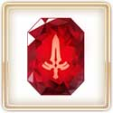 | 剣の魔石 | 2 | 0.4% | ||
| 殺の秘石 | 1 | 0.2% | 殺の秘石 | 1 | 0.2% | 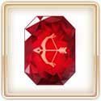 | 弓の魔石 | 2 | 0.4% | ||
| 狂の秘石 | 1 | 0.2% | 狂の秘石 | 1 | 0.2% | 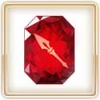 | 槍の魔石 | 2 | 0.4% | ||
| 剣の魔石 | 2 | 0.4% | 剣の魔石 | 2 | 0.4% | 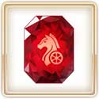 | 騎の魔石 | 2 | 0.4% | ||
| 弓の魔石 | 2 | 0.4% | 弓の魔石 | 2 | 0.4% | 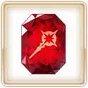 | 術の魔石 | 2 | 0.4% | ||
| 槍の魔石 | 2 | 0.4% | 槍の魔石 | 2 | 0.4% | 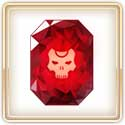 | 殺の魔石 | 2 | 0.4% | ||
| 騎の魔石 | 2 | 0.4% | 騎の魔石 | 2 | 0.4% |  |
狂の魔石 | 2 | 0.4% | ||
| 術の魔石 | 2 | 0.4% | 術の魔石 | 2 | 0.4% |  |
剣の輝石 | 4 | 0.8% | ||
| 殺の魔石 | 2 | 0.4% | 殺の魔石 | 2 | 0.4% | 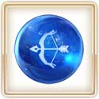 | 弓の輝石 | 4 | 0.8% | ||
|
狂の魔石 | 2 | 0.4% | |
狂の魔石 | 2 | 0.4% |  |
槍の輝石 | 4 | 0.8% |
|
剣の輝石 | 4 | 0.8% | |
剣の輝石 | 4 | 0.8% | 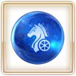 | 騎の輝石 | 4 | 0.8% |
| 弓の輝石 | 4 | 0.8% | 弓の輝石 | 4 | 0.8% | 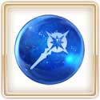 | 術の輝石 | 4 | 0.8% | ||
|
槍の輝石 | 4 | 0.8% | |
槍の輝石 | 4 | 0.8% | 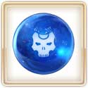 | 殺の輝石 | 4 | 0.8% |
| 騎の輝石 | 4 | 0.8% | 騎の輝石 | 4 | 0.8% | 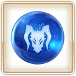 | 狂の輝石 | 4 | 0.8% | ||
| 術の輝石 | 4 | 0.8% | 術の輝石 | 4 | 0.8% | 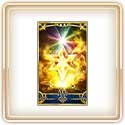 | 叡智の猛火 ALL | 40 | 8% | ||
| 殺の輝石 | 4 | 0.8% | 殺の輝石 | 4 | 0.8% | 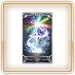 | 叡智の大火 ALL | 20 | 4% | ||
| 狂の輝石 | 4 | 0.8% | 狂の輝石 | 4 | 0.8% | 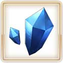 | 50萬QP | 2 | 0.4% | ||
| 叡智の猛火 ALL | 40 | 8% | 叡智の猛火 ALL | 40 | 8% | 10萬QP | 15 | 3% | |||
| 叡智の大火 ALL | 20 | 4% | 叡智の大火 ALL | 20 | 4% | 5萬QP | 40 | 8% | |||
| 50萬QP | 2 | 0.4% | 50萬QP | 2 | 0.4% | 3萬QP | 80 | 16% | |||
| 10萬QP | 15 | 3% | 10萬QP | 15 | 3% | 1萬QP | 100 | 20% | |||
| 5萬QP | 40 | 8% | 5萬QP | 40 | 8% | 2000友情點數 | 4 | 0.8% | |||
| 3萬QP | 80 | 16% | 3萬QP | 80 | 16% | 100友情點數 | 100 | 20% | |||
| 1萬QP | 100 | 20% | 1萬QP | 100 | 20% | ||||||
| 2000友情點數 | 4 | 0.8% | 2000友情點數 | 4 | 0.8% | ||||||
| 100友情點數 | 100 | 20% | 100友情點數 | 100 | 20% | ||||||
- 交換詳細
| 金色星星 | 銀色鈴鐺 | 迷你緞帶 | ||||||
|---|---|---|---|---|---|---|---|---|
| 道具 | 可交換次數 | 必要個數 | 道具 | 可交換次數 | 必要個數 | 道具 | 可交換次數 | 必要個數 |
| ホーリーナイト・サイン | 2次 | 150個 | ホーリーナイト・サイン | 1次 | 150個 | ホーリーナイト・サイン | 1次 | 150個 |
| 樽入りチキン | 2次 | 100個 | 樽入りチキン | 1次 | 100個 | 樽入りチキン | 1次 | 100個 |
| ライダーモニュメント | 20次 | 20個 | ライダーピース | 20次 | 20個 | 世界樹の種 | 20次 | 20個 |
| キャスターモニュメント | 20次 | 20個 | キャスターピース | 20次 | 20個 | 太陽のフォウくん | 20次 | 20個 |
| アサシンモニュメント | 20次 | 20個 | アサシンピース | 20次 | 20個 | 星のフォウくん | 20次 | 20個 |
| 竜の逆鱗 | 10次 | 40個 | 蛇の宝玉 | 20次 | 20個 | 叡智の猛火 | 50次 | 10個 |
| 10,000QP | --- | 1個 | 金色星星 | --- | 10個 | 叡智の大火 | 50次 | 5個 |
| 銀色鈴鐺 | --- | 10個 | ||||||
| 合計 | 2200個 | 合計 | 1850個 | 合計 | 2100個 | |||


◆活動舉辦期間◆
2015年12月16日（三）5：00～12月25日（五）22：59
◆活動概要◆
贈送來自奈須きのこ的原創故事，期間限定聖誕節活動。
在迦爾帝亞之門突然出現的任務「大致一週 聖誕Alter」。協助期間限定Servant「★4(SR)阿爾托莉亞・潘德拉剛〔聖誕Alter〕」(Rider)，入手能交換珍藏聖誕禮物的特別交換券吧！
與邪惡聖誕老人・聖誕Alter渡過的特別聖誕節！ 各位Master，到底能否平安地迎接聖誕夜呢！？
在迦爾帝亞之門突然出現的任務「大致一週 聖誕Alter」。協助期間限定Servant「★4(SR)阿爾托莉亞・潘德拉剛〔聖誕Alter〕」(Rider)，入手能交換珍藏聖誕禮物的特別交換券吧！
與邪惡聖誕老人・聖誕Alter渡過的特別聖誕節！ 各位Master，到底能否平安地迎接聖誕夜呢！？


※12/16（三）圖片修正

在活動任務收集魔術襪子，從聖誕Alter得到禮物吧！
禮物是每個陣容會放入1個大獎道具。
抽到大獎道具，實行「禮物重置」的話，會補充新的大獎道具。
全部有5次陣容！抽到大獎道具往下個陣容前進吧！
※第6次以後，入手全部的道具才能重置。但不會補充大獎道具。


◆實用攻略方法・其1◆

◆實用攻略方法・其2◆
裝備活動限定概念禮裝和期間限定概念禮裝的話，活動專用道具「金色星星」「銀色鈴鐺」「迷你緞帶」和「魔法襪子」的獲得數就會增加。
※請注意在各任務的道具掉落率並非100%。
※請注意在各任務的道具掉落率並非100%。


◆活動限定概念禮裝◆
★★★★★SSR
技能
★★★★★SSR
ホーリーナイト・サイン
ATK 250（最大：1000） HP 375（最大：1500）技能
自身的Quick卡性能提升8%＆Critical威力提升15％＋魔法襪子的追加掉落率增加20%【『ほぼ週間サンタオルタさん』活動期間限定】

※12/16（三）圖片修正

◆交換方法◆
交換期間：12/30（三）12：59
※交換期間結束後，「金色星星」「銀色鈴鐺」「迷你緞帶」會消失。
從達文西工房内的「活動道具交換」，以收集來的活動專用道具來交換以下的道具。
※交換期間結束後，「金色星星」「銀色鈴鐺」「迷你緞帶」會消失。
從達文西工房内的「活動道具交換」，以收集來的活動專用道具來交換以下的道具。
◆能以金色星星交換的道具◆

【活動限定概念禮裝】
★5（SSR）「ホーリーナイト・サイン」
【靈基再臨素材】
樽入りチキン
ライダーモニュメント
キャスターモニュメント
アサシンモニュメント
竜の逆鱗
★5（SSR）「ホーリーナイト・サイン」
【靈基再臨素材】
樽入りチキン
ライダーモニュメント
キャスターモニュメント
アサシンモニュメント
竜の逆鱗
◆能以銀色鈴鐺交換的道具◆

【活動限定概念禮裝】
★5（SSR）「ホーリーナイト・サイン」
【靈基再臨素材】
樽入りチキン
ライダーピース
キャスターピース
アサシンピース
蛇の宝玉
★5（SSR）「ホーリーナイト・サイン」
【靈基再臨素材】
樽入りチキン
ライダーピース
キャスターピース
アサシンピース
蛇の宝玉
◆能以迷你緞帶交換的道具◆

【活動限定概念禮裝】
★5（SSR）「ホーリーナイト・サイン」
【靈基再臨素材】
樽入りチキン
世界樹の種
【各種卡片】
太陽のフォウくんALL★3（HP）
星のフォウくんALL★3（ATK）
叡智の猛火ALL★4（SR）
叡智の大火ALL★3（R）
★5（SSR）「ホーリーナイト・サイン」
【靈基再臨素材】
樽入りチキン
世界樹の種
【各種卡片】
太陽のフォウくんALL★3（HP）
星のフォウくんALL★3（ATK）
叡智の猛火ALL★4（SR）
叡智の大火ALL★3（R）


◆聖誕節PickUp召喚期間◆
期間：2015年12月16日(三) 5:00 ～ 12月25日(五) 22:59
以期間限定舉辦聖誕節Pick Up召喚！！
Servant「★5（SSR）開膛手傑克」與「★4（SR）童謠」初登場！放入隊伍的話在活動任務的話會增加「魔法襪子」獲得數。
還有，同樣會讓「魔法襪子」獲得數增加的「★4（SR）瑪莉・安東尼」、「★3（R）羅賓漢」、「★3（R）荊軻」的出現率也提升了！
※開膛手傑克與童謠在聖誕節PickUp召喚期間結束後，在第4章配信時追加到故事召喚。
另外，裝備期間限定概念禮裝「★5（SSR）プレゼント・フォー・マイマスター」、「★4（SR）聖者の行進」、「★3（R）雷光のトナカイ君」，活動專用道具的獲得數也會提升。
在Pick Up期間中，初登場Servant2位、期間限定概念禮裝3枚、Pick Up Servant3位的出現機率提高！
10次召喚★4(SR)以上1枚確定和★3(R)以上的Servant1位確定！
※★4(SR)以上確定包含Servant和概念禮裝。
以期間限定舉辦聖誕節Pick Up召喚！！
Servant「★5（SSR）開膛手傑克」與「★4（SR）童謠」初登場！放入隊伍的話在活動任務的話會增加「魔法襪子」獲得數。
還有，同樣會讓「魔法襪子」獲得數增加的「★4（SR）瑪莉・安東尼」、「★3（R）羅賓漢」、「★3（R）荊軻」的出現率也提升了！
※開膛手傑克與童謠在聖誕節PickUp召喚期間結束後，在第4章配信時追加到故事召喚。
另外，裝備期間限定概念禮裝「★5（SSR）プレゼント・フォー・マイマスター」、「★4（SR）聖者の行進」、「★3（R）雷光のトナカイ君」，活動專用道具的獲得數也會提升。
在Pick Up期間中，初登場Servant2位、期間限定概念禮裝3枚、Pick Up Servant3位的出現機率提高！
10次召喚★4(SR)以上1枚確定和★3(R)以上的Servant1位確定！
※★4(SR)以上確定包含Servant和概念禮裝。


★★★★★SSR
技能
プレゼント・フォー・マイマスター
ATK 0（最大：0） HP 750（最大：3000）技能
自身的星星集中度提升100%＆回復量提升40％＋金色星星的掉落獲得數增加1個【『ほぼ週間サンタオルタさん』活動期間限定】


★★★★SR
技能
聖者の行進
ATK 0（最大：0） HP 600（最大：2250）技能
對自身賦予每回合HP200回復狀態＆賦予每回合NP3%獲得狀態＋銀色鈴鐺的掉落獲得數增加1個【『ほぼ週間サンタオルタさん』活動期間限定】


★★★R
技能
雷光のトナカイ君
ATK 200（最大：1000） HP 0（最大：0）技能
自身的Buster卡性能提升15％(3回合)＋迷你緞帶的掉落獲得數增加1個【『ほぼ週間サンタオルタさん』活動期間限定】